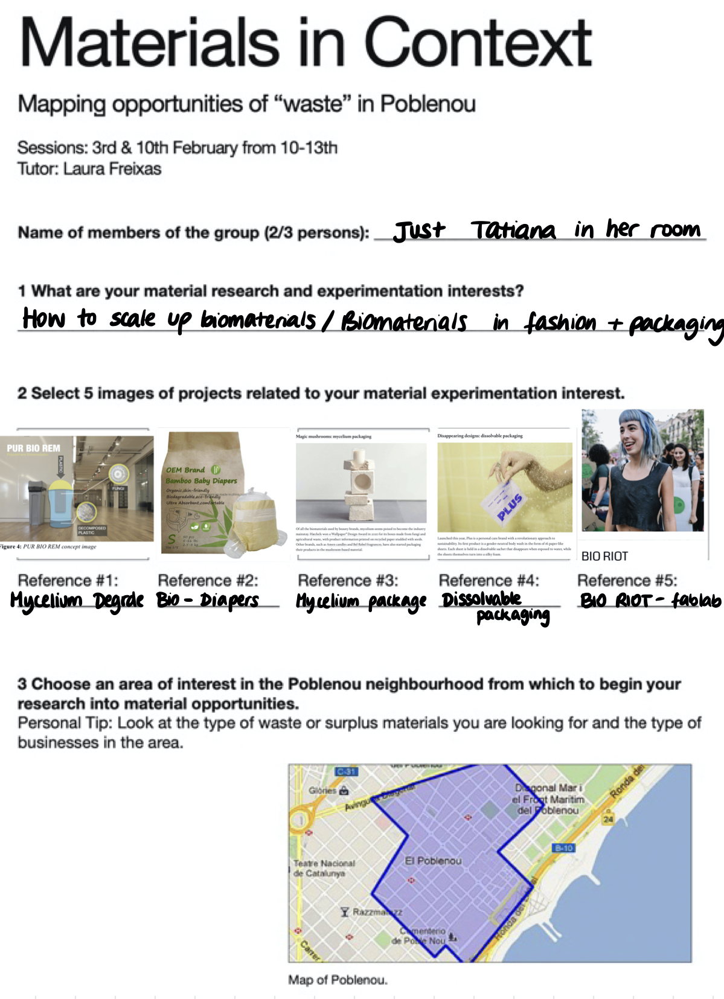
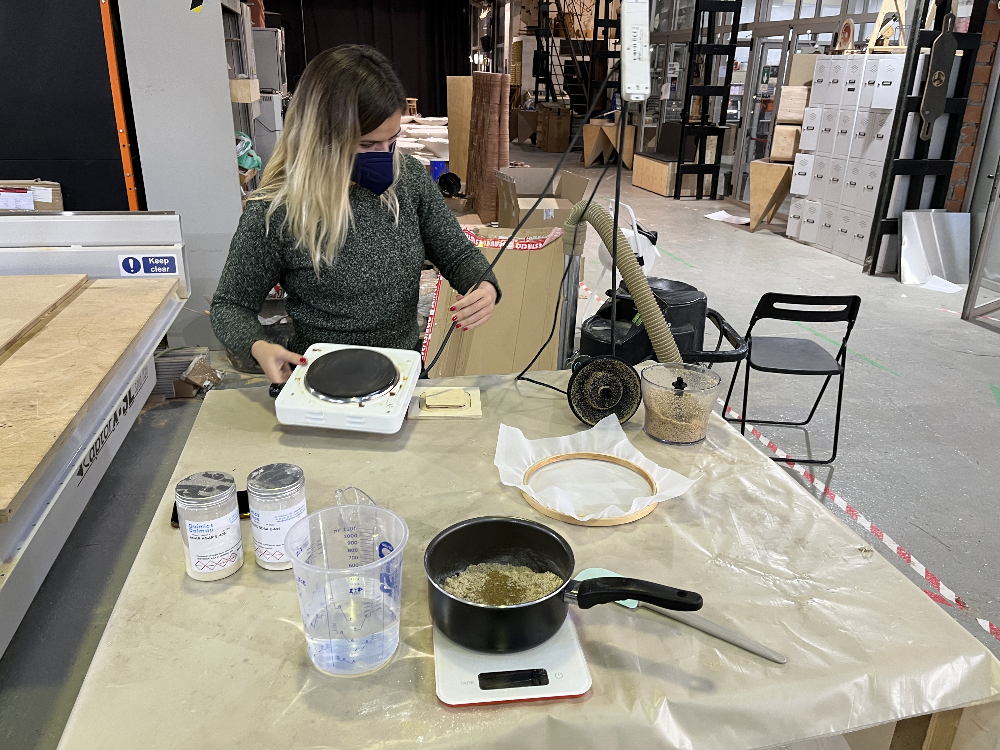
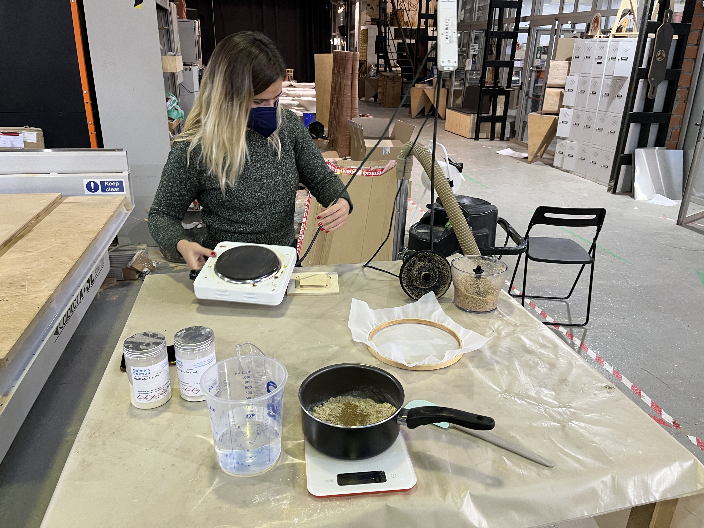
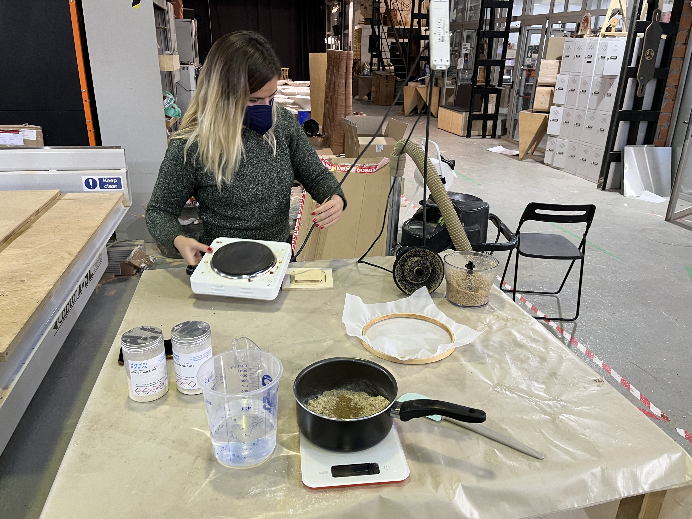

It was hard for me to complete this exercise in the way which Lara planned us to, because I was still in quarantine in my room, unable to visit the restaurant & shops in person. Therefore, I used Google Maps and tried to located businesses I already knew, but also tried to find something new. I did not only select biomaterials
I am not sure what materials I would like to experiment with specifically, but I do know that I would like to find practical projects that could also be scalable.
Here is the exercise sheet that Laura asked us to fill in:

On Thursday, I joined Paula & Marina’s group through a Whatsapp call whilst they were in class. We shared our Poblenou waste maps and exchanged ideas and resources. The Horchateria and Burger restaurants ended up interesting us the most, so we decided to explore the two main materials those businesses could offer: Chufa (tigernut) and Oil.
Oil:
liquid at room temperature, high boiling point, messy, greasy, water repellant
We evaluated the uses, strengths and downfalls of each material, and how they could be used in application. Some initial ideas that came to mind were making plant based leather out of the tiger nuts and making paint by mixing the oil with waste pigments. We began to do research on both opportunities, and returned to the businesses to collect their materials.
On Monday, we met up and explored the possibilities of using the chufa waste we collected the previous week. We noticed that the bag was warm and wet, and that the top of it began to mold. After scraping off the top layer, we gathered some from the center which was not yet going bad.
We began to experiment. We ground up the chufa into a finer meal, then seperated into different work stations, where each one of us used slights different ingredients and moulds. We wanted to see the different possible textures we could achieve according to the various techniques used.
I personally made a mixture composed of alginate (10g), agar (10g), chufa meal (40g), glycerin (20g), water (300g) and a splash of vinegar.

Marina and I spread out my batch into a large, thin layer on the mould. We will see in a few days how it looks when it dries out.
6 Opportunities identified during the experimentation.
Material Exhibition
On Thursday Feb 10, we exhibited our various biomaterials and went from table to table listening what other people had to say about their waste material experiments and final outcome. This was the full table:
I really liked the "beer paper" and the cemetery flowers comb idea, even though it didn't pop out of the mould fully.
These were the materials we displayed, and there was definitely a favourite amongst the crowd: The shiny, jellyfish donut Chufa + Mica biomaterial.
Last but not least, here is our completion of the pdf we were asked to complete by Sunday Feb 20th.


 


 6 Opportunities identified during the experimentation.
6 Opportunities identified during the experimentation.